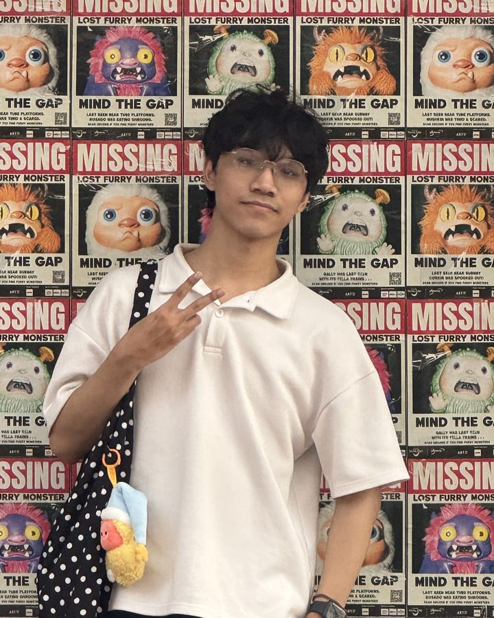

About
Player first, spreadsheet close behind
I got into games because they made me feel something, and I stayed because figuring out why they do is the best job I know. Four years in, that curiosity has a toolkit.
What I bring
Concept & ideation
- From jam tables to boardroom pitches; one original concept greenlit into production at VNG
AI-assisted design workflows
- Claude and Gemini in the daily pipeline: level generation, automated metrics reports, documentation
System design
- Economies, progression, matchmaking, monetization: the machines underneath the fun
Mentoring
- Eight designers mentored across two companies; every VNG mentee passed every gate and is still there

The arc
-
2022 – 2024
VNG Corporation
Game Designer · hired through the ZPS Game Designer Fresher Program
The fresher program is VNG’s only hiring path for designers: a multi-gate, six-month intensive covering concept, systems, data-driven, and live-ops design. My capstone boardgame was commended for its gameplay depth and UI/UX completeness.
- Adapted Trix for MENA and pitched the real-time match-3 that became Tinkle Crush
- Sole designer on Agent Veggie: designed and balanced its 24 minigames and the per-character function system
- Led a five-designer team on the studio’s most ambitious social-sim world
- Mentored four fresher designers through the 2023 and 2024 programs; all four passed every gate, were hired, and are still with the company
-
2024 – 2025
Amanotes
Game Designer · music-game publisher, 3B+ downloads worldwide
Specialized in converting the studio’s hyper-casual titles into long-term hybrid products.
- Built Cat Dash’s economy from scratch, taking it from ad-only to hybrid IAP + IAA: the Currency Shop, Cosmetics, and a Battle Pass
- Improved the FTUE onboarding and cut the early drop rate — the only new title of its cohort to pass both the prototype and soft-launch gates
- Ran the A/B test that restructured the level format around shorter sessions, on a sawtooth curve with Kishōtenketsu pacing
- On Tiles Master, designed the core loop, bot opponent logic, and dynamic matchmaking; strong CPI and D1 on a high-potential prototype, closed by leadership when D7 came in under the bar
-
2026
XGame Studio
Senior Game Designer · mid-sized company entering hybrid-casual
Brought in to carry big-studio fundamentals into a growing one: design process, documentation standards, and AI-assisted workflows.
- Lead Game Designer on Catdom: Color Hole and key designer on Color Blast: Block Shooter — two live hybrid-casuals, 1.5M+ downloads between them
- Wrote the Level Design standards and ideation templates now adopted company-wide, across roughly ten projects, plus the Claude-based level and metrics pipelines the GD team runs daily
- Own the GD internship program end-to-end: 50+ applicants interviewed, four interns mentored
- 1st place in the company’s Creative Day contest and Top 6 in its Leadership Challenge; regular in ideation sessions with the Board of Directors
Skills, in detail
Design
- Game concepts, systems and mechanics
- Economy and feature design
- Level design, 2D and 3D
- UI/UX wireframes and prototypes
Product & ops
- Hybrid monetization (IAP + IAA), Battle Pass, offer design
- Live-ops events, offers, store design
- Data-driven design: find the weak point, hypothesize, test, roll out
- KPI-driven design: retention, conversion, CPI
Leadership
- Led game designer teams across two companies
- GDD standardization
- Mentoring and an end-to-end internship pipeline
Tools
- Figma, Photoshop, Illustrator
- Unity, to verify core gameplay
- Claude & Gemini, wired into real pipelines